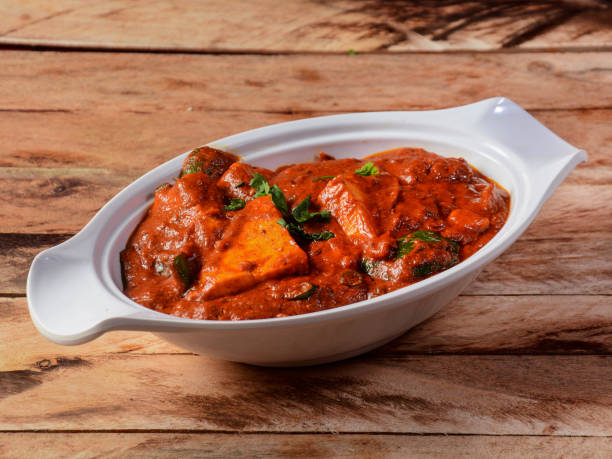

Paneer Tikka Masala

Ingredients
- 1 cup plain yogurt
- 2 tablespoons tandoori masala
- 1 teaspoon garam masala
- 1 teaspoon ground turmeric
- 1 teaspoon ground cumin
- 1 teaspoon ground coriander
- 1 teaspoon chili powder
- 1 teaspoon salt
- 1 pound paneer, cut into cubes
- 2 tablespoons vegetable oil
- 1 onion, finely chopped
- 2 teaspoons grated fresh ginger
- 2 teaspoons minced garlic
- 1 (14.5 ounce) can tomato sauce
- 1 cup heavy cream
- 1 teaspoon sugar
- 1/4 cup chopped fresh cilantro
Directions
- In a mixing bowl, combine the plain yogurt, tandoori masala, garam masala, turmeric, cumin, coriander, chili
powder, and salt. Whisk the mixture until smooth and well combined.
- Add the paneer cubes to the yogurt mixture. Gently toss to coat each piece evenly. Cover the bowl and let
the paneer marinate in the refrigerator for at least 30 minutes, or up to 2 hours for better flavor.
- Heat 2 tablespoons of vegetable oil in a large skillet over medium heat. Add the finely chopped onion and
sauté until it becomes soft and golden brown, about 5-7 minutes.
- Add the grated ginger and minced garlic to the skillet. Stir and cook for another 1-2 minutes until
fragrant.
- Pour in the tomato sauce and stir well. Let the mixture cook for about 5 minutes, stirring occasionally, to
allow the flavors to meld together.
- Reduce the heat to low and slowly stir in the heavy cream. Add the sugar and mix well. Let the sauce simmer
gently for 10 minutes, stirring occasionally to prevent sticking.
- While the sauce is simmering, heat a separate non-stick pan over medium heat. Add the marinated paneer cubes
and cook until they are golden brown on all sides. Turn them gently to avoid breaking.
- Once the paneer is cooked, transfer it to the skillet with the simmering sauce. Stir gently to coat the
paneer with the sauce. Let it simmer for another 5 minutes to allow the flavors to combine.
- Remove the skillet from heat and garnish the dish with freshly chopped cilantro.
- Serve the Paneer Tikka Masala hot with naan, roti, or steamed basmati rice. Enjoy your meal!